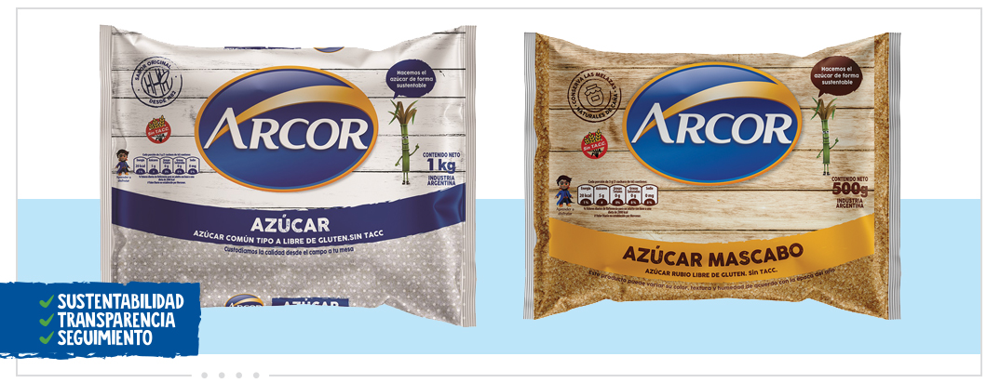
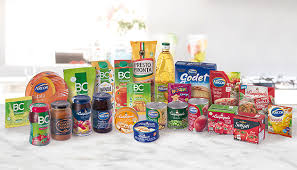

Grupo Arcor ingresa en el mundo de los endulzantesDespués de muchos meses de trabajo de diferentes áreas de Grupo Arcor, la División de Agronegocios lanza al mercado azúcar Arcor. El mismo ingrediente con el se elaboran nuestros productos ahora llega a los consumidores, con calidad 100% certificada. Trabajo en equipo, inversión y el ingreso a una nueva categoría de endulzantes: el azúcar mascabo.
Alimentos PRINCIPAL EMPRESA DE ALIMENTOS DE ARGENTINA. Grupo Arcor posee un importante know-how en la elaboración de productos alimenticios y cuenta con 6 plantas industriales en Argentina que trabajan con una rigurosa selección de materias primas y avanzados procesos tecnológicos. Su oferta de productos de alta calidad se comercializa bajo un portfolio de marcas lideres muy valoradas y reconocidas por los consumidores tales como: Arcor, BC, La Campagnola, Salsati y Presto Pronta entre otras.
Grupo Arcor junto al Ministerio de Ciencia, Tecnología e Innovación anunciaron los proyectos ganadores del “Premio Arcor a la Innovación” En esta 7ma edición se presentaron más de 150 propuestas innovadoras para la industria de la alimentación, desarrolladas por personas emprendedoras, PyMEs, investigadores e investigadoras y organizaciones vinculadas a la economía social de todo el país.
Grupo Arcor presenta el bon o bon dulce de leche Con una inversión aproximada de US$ 500.000, un desarrollo de dos años e innovación aplicada para su producción, el lanzamiento está pensado para llevar este tradicional sabor argentino al mercado internacional.